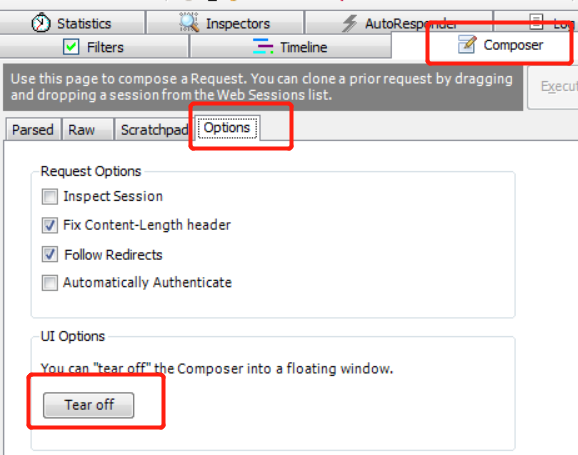

接口测试
什么是接口测试？
接口测试的定义
百度百科
接口测试是测试系统组件间接口的一种测试。接口测试主要用于检测外部系统与系统之间以及内部各个子系统之间的交互点。测试的重点是要检查数据的交换，传递和控制管理过程，以及系统间的相互逻辑依赖关系等。
接口测试（举例）
不依赖浏览器页面，验证Tpshop首页是否可以访问？
已知：tpshop首页接口地址：www.tpshop.com
Fiddler中Composer应用---模拟接口
可以通过Composer模拟发送接口请求和数据，不用特意先拦截下来再去修改数据
1. 点击右侧Composer--->Options--->Trea off 让它单独显示；

2. 点击Parsed，可以手动输入，也可把我们抓到的包拖动到Composer中，进行相应的修改；
3. 点击【Execute】发送请求。

接口测试的意义
WEB项目中可以脱离页面进行测试 能发现页面上发现不了的缺陷